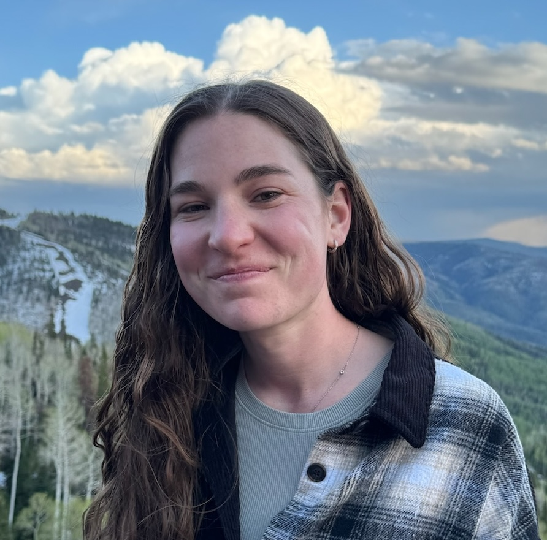

I am a postdoctoral researcher at MIT CSAIL in Regina Barzilay's lab. I received my PhD in Computer and Information Science from the University of Pennsylvania in 2025, where I was advised by Jacob R. Gardner and supported by the NSF Graduate Research Fellowship.
My research focuses on probabilistic machine learning, Bayesian optimization, and generative modeling, with applications to scientific design problems. I have worked on optimizing antibiotics, antibodies, RNA sequences, and superconducting materials. My work on antimicrobial peptides achieved the first in vivo experimental validation of generative Bayesian optimization.
A Generative Artificial Intelligence Approach for Antibiotic Optimization
Nature Machine Intelligence 2026 · paper
We Still Don't Understand High-Dimensional Bayesian Optimization
AISTATS 2026 Best Paper Award · paper
A Dataset for Distilling Knowledge Priors from Literature for Therapeutic Design
NeurIPS 2025 · paper
Covering Multiple Objectives with a Small Set of Solutions Using Bayesian Optimization
NeurIPS 2025 · paper
Generative Modeling for RNA Splicing Predictions and Design
eLife 2025 · paper
Learned Offline Query Planning via Bayesian Optimization
SIGMOD 2025 · paper
Approximation-Aware Bayesian Optimization
NeurIPS 2024 Spotlight · paper
Joint Composite Latent Space Bayesian Optimization
ICML 2024 · paper
Discovering Many Diverse Solutions with Bayesian Optimization
AISTATS 2023 Notable Paper · paper · BoTorch tutorial
Local Latent Space Bayesian Optimization over Structured Inputs
NeurIPS 2022 · paper
See full list on Google Scholar
Developed structure prediction methods for antibody therapeutic design
Developed Bayesian optimization methods; first-author ICML 2024 paper
Applied ML to ionospheric data; co-authored ESS 2021 paper